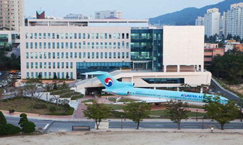

HOME > 인재채용 > 인재육성
인재육성
글로벌 기업으로 거듭나는 한국공항의 인재육성 체계입니다.
기본역량 직장인으로서 갖추어야 할 기본 교육
직무역량 직무능력 향상을 위한 업무 분야별, 수준별 차별화된 교육과정
특별교육 회사의 차세대 핵심인재 양성을 위한 교육과정
KAS인재육성체계
한국공항의 교육체계는
기본역량,직무역량 및 특별 교육 세 가지 영역으로 구분됩니다.
- 기본역량
- ✓ 승격교육
- ✓ 신입사원 입사 교육
- ✓ 성희롱 예방 교육
- ✓ 리더십 교육
- ✓ 안전관리과정
- 직무역량
- ✓ 직무역량교육(스마트러닝
- ✓ 전문기관 위탁교육
- ✓ 지상조업장비 작동 교육
- ✓ 위험물 취급 교육
- ✓램프마스터 교육
- ✓ 서비스교육
- 특별교육
- ✓ 정석대학
- ✓ 대학원 과정
- ✓ 신갈연수원 입소 교육

- 사내 산업대학(정석대학)
- 한진그룹의 사내 대학은'정석대학'을 통해 이론과 실무를 겸비할 수 있도록 학업 및 학비를 지원하고 있습니다. 정석대학은 전문학사학위 및 학사학위 총 4개 과정을 2년제로 운영 중이며 회사 경쟁력 향상에 기여하고 있습니다.
- 대학원 과정
- 별도의 심사/선발과정을 거쳐 대학원 입학의 기회를 제공하며, 항공분야 전문인력양성을 지원하고 있습니다.
- 멘토링 프로그램
- 신입사원들이 조직에 조기 적응,정착할 수 있도록 선후배를 일대일 매칭하여 상담 및 조언을 해주는 멘토링 제도를 운영하고 있습니다.